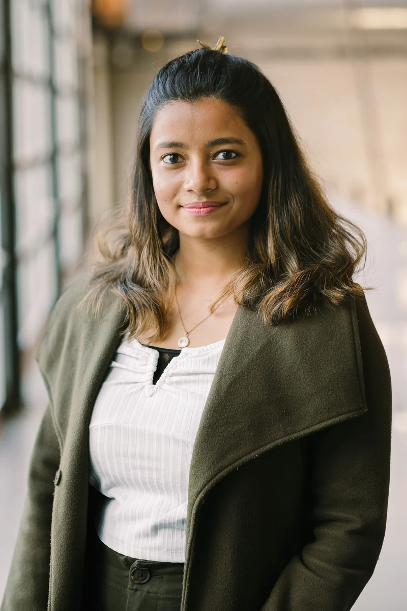

The Advisor · Summer 2026
Building More Than Businesses: The Story of the Origin to Opportunity (O2O) Lab
A look back at the program through the experiences of newcomer entrepreneurs.
Based in Surrey, British Columbia
Inclusive programs, facilitation & storytelling
I coordinate programs, design workshops, and write about the people and ideas behind the work. Across Canada and Australia, I’ve worked in newcomer entrepreneurship, nonprofit governance, quality and safety, and communications.

NLOWE · 2025–2026
I coordinated a hybrid entrepreneurship program for women and gender-diverse newcomers across Newfoundland and Labrador.
Fora: Network for Change · 2026
I designed and facilitated a virtual Gender-Based Analysis Plus workshop for the Rise on Boards cohort. I used polling, governance scenarios, and guided reflection to help participants examine bias, ask whose perspectives were missing, and apply what they learned to a board decision.
Explore Rise on BoardsFuture of Good · 2026
As Vice Chair, I contributed to draft policies on director recruitment, onboarding, and ethics. The work focused on making responsibilities and review steps clearer for current and incoming directors.
ASL Innovations · 2023–2025
I coordinated documentation for ASL’s successful Certificate of Recognition (COR) certification, standardized safety and onboarding materials, and supported its ISO 9001:2015 quality system. I also redesigned the Squarespace website, edited video, and wrote about mobile plastics recycling for Cold Harvester.
See the recycling articleMemorial University · 2022–2023
I scheduled and supervised airport greeters and set up team communication routines so incoming international students had a clear point of contact when they arrived in St. John’s.
Interactive learning prototype · 2026
A browser-based learning prototype for ages 8 and up, with activities on animal senses, aquatic adaptations, and conservation, alongside quizzes and other exploration topics.
Try the learning labCanada & Australia · 2018–2023
I coordinated education campaigns and events at Aussizz Group, created social and visual content for Adrift Clothing and Sqr One, and supported audience research and ad copy at News Corp Australia. With PELMO International, I researched English-language assessment for Latin American audiences and created multimedia content.
The Advisor · Summer 2026
A look back at the program through the experiences of newcomer entrepreneurs.
The Advisor · Spring 2026
An introduction to the lab and its approach to supporting newcomer entrepreneurs.
Cold Harvester · Winter 2023–24
An industry article on bringing recycling equipment to aquaculture sites to process plastic waste closer to its source.
LinkedIn · Personal essay
A first-person reflection on the experience of being a newcomer and finding support far from home.
Theatre Hill, St. John’s · April 2026
I shared original poetry as a featured reader at the inaugural Poetry & Prose night. I’m a WritersNL member and write poetry, fiction, and creative nonfiction.
NLOWE · February 2026
I co-hosted a Black History Month panel on belonging and barriers in Newfoundland and Labrador’s entrepreneurial ecosystem.
Labrador Immigration Summit · 2026
Listed as an NLOWE panelist on mentorship, community support, and newcomer inclusion in the summit program.
I read local and campus news as a volunteer on 93.5 FM in 2022.
Listen to three broadcastsI hosted and contributed to episodes on student life and campus events with QUT Hype in Brisbane.
I developed a podcast concept, branding, and editorial plan as a graduate assistant with Memorial University’s School of Graduate Studies.
Aug 2026
Fora: Network for Change · Remote
Sep 2025 – Jul 2026
Newfoundland and Labrador Organization of Women Entrepreneurs · St. John’s, NL
May 2023 – Mar 2025
ASL Innovations · St. John’s, NL
Started as a Communications and Sustainability Intern with ASL Energy.
Feb – May 2023
PELMO International · St. John’s, NL
Aug 2022 – Apr 2023
Memorial University, Internationalization Office · St. John’s, NL
Sep – Dec 2022
Memorial University, School of Graduate Studies · St. John’s, NL
Jul 2019 – Feb 2020
Aussizz Group · Brisbane, Australia
Advised prospective students, coordinated enrolment and CRM records, and supported events and marketing.